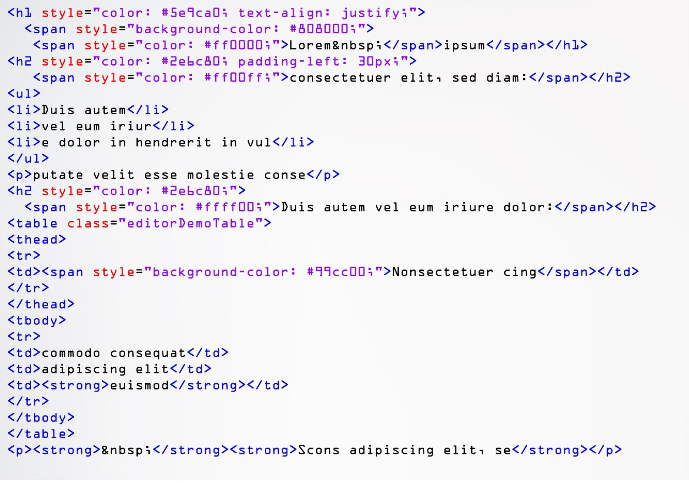
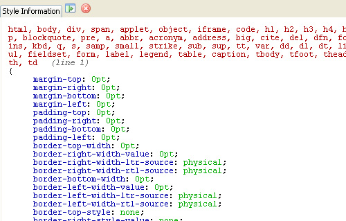

A tutorial about how to create a swatch book like component that let's you open and rotate the single swatches revealing some details. We will be using CSS transforms and transitions and create a simple jQuery plugin.
HTML
JAVASCRIPT
CSS
Today’s tutorial is about creating an animated swatch book using CSS rotation transforms and JavaScript.
The idea is to show a swatch book like structure and make the single swatches or “sheets” clickable.
When clicking on a swatch, we’ll rotate the other swatches in order to reveal the selected one.
Please note: the result of this tutorial will only work as intended in browsers that support the respective CSS properties.
In this tutorial we will be using an icon font that was created with Fontello.
We will omit vendor prefixes in this tutorial. But you’ll of course find them in the files.
It’s my aim to help you be a better designer. I’ve made you a simple Adobe Illustrator template to manage your colour, grid and guides. So you’ll get to executing your ideas around 20 minutes sooner, every time.
Join my monthlyish email list and I’ll send you the template and new tutorials to help you design & code beautiful websites. You can unsubscribe anytime.
For the markup we’ll have a simple structure with several divisions where each one contains an icon span and a h4:

The last division will not have an icon span but instead an h4 and an h5 element. This last division will be our “cover”, the top most layer of the swatch book.
Let’s take a look at the style.
First, let’s define the style for the containing wrapper. We’ll make it the same width like one of the swatches (although they will take up more space) so that we can easily center it:
Our aim is to create a swatch book like structure with several swatch “sheets”. Each one will be rotated using the CSS transform property (JS). So, let’s give the swatches a realistic width and height and make them absolute. Our initial state is that all swatches are stacked on top of each other. The transform-origin will define how our swatches will be rotated. Since we’ll want to use the bottom left corner for that, we’ll set a value of 25% 90%. The backface-visibility hidden will help avoiding a jagged looking text when rotating:
We want to make it look as realistic as possible, so we’ll give the bottom most element, which is our first child, a very subtle shadow. For every following element we’ll increase that second shadow.
Last, but not least, let’s style the icon class. We’ll use an icon font that we have generated with Fontello (Entypo icon set). We’ll style the span and the :before pseudo-element, which will contain the characters of the icon font:
And that’s all the style! Now, let’s make some magic!
First, let’s define the style for the containing wrapper. We’ll make it the same width like one of the swatches (although they will take up more space) so that we can easily center it:
Our aim is to create a swatch book like structure with several swatch “sheets”. Each one will be rotated using the CSS transform property (JS). So, let’s give the swatches a realistic width and height and make them absolute. Our initial state is that all swatches are stacked on top of each other. The transform-origin will define how our swatches will be rotated. Since we’ll want to use the bottom left corner for that, we’ll set a value of 25% 90%. The backface-visibility hidden will help avoiding a jagged looking text when rotating:
We want to make it look as realistic as possible, so we’ll give the bottom most element, which is our first child, a very subtle shadow. For every following element we’ll increase that second shadow.
Last, but not least, let’s style the icon class. We’ll use an icon font that we have generated with Fontello (Entypo icon set). We’ll style the span and the :before pseudo-element, which will contain the characters of the icon font:
And that’s all the style! Now, let’s make some magic!
Your email address will not be published. Required fields are marked *